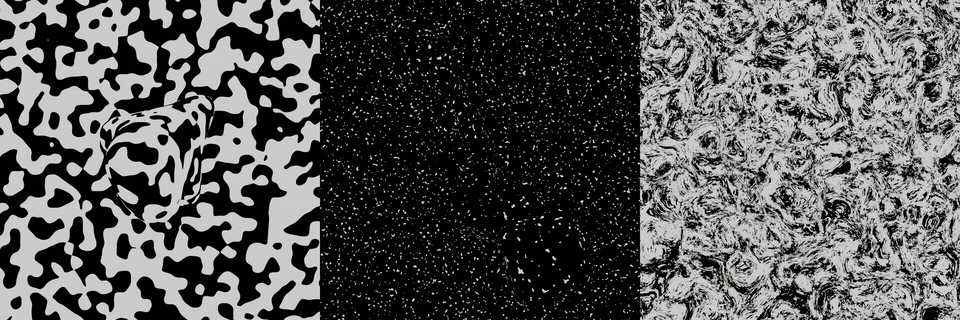

The question
How do we see 3D shape — for grasping, reaching, navigating — when the world is constantly in motion? The image on the retina is flat and ambiguous, yet we perceive a world of solid surfaces moving in depth. Recovering that 3D structure is one of vision's hardest inverse problems, yet fundamental for physical interaction. This work asks which computation the brain uses, and where it might happen (if we were to intervene with BCI). Joint work from Jim DiCarlo's lab and Josh Tenenbaum's lab in MIT.

Figure 1. To isolate motion-defined surface geometry, we built texture-masked rotating objects: identical textures on foreground and background camouflage static cues, so the only way to recover 3D shape is from motion. Trivial for humans, hard for current vision models.
Approach
Using a purpose-built stimulus paradigm, we combine large-scale chronic electrophysiology in the dorsal and ventral visual pathways with human psychophysics to isolate a structure-from-motion region and characterize neural representations that track human behavioral patterns. The stimuli are designed so that the mechanism of interest can be turned on and off, separating shape-from-motion inference from lower-level motion or luminance cues. In other words, the object rotated briefly midway of a video clip, as shown in the yellow rectangular epoch in Figure 2(b).

Figure 2. (a) Neural recordings. Spiking activity were recorded from both ventral and dorsal streams using chronic multi-electrode arrays. Ventral recordings targeted IT with surface arrays (areas pIT, cIT, aIT). Dorsal recordings targeted IPL regions buried within sulci using volumetric arrays (areas Tpt and 7op). (b) Neural decoding. Downstream regions of both ventral and dorsal streams carry explicit (linearly decodable) representations of motion-defined surfaces. A single linear decoder was trained on spike rates estimated from the dynamic period (100–300ms), pooled across all three object sizes, and evaluated on held-out trials. Decoding performances are shown separately for each object size (6°, 16°, and 27°) with increasing line thickness corresponding to increasing object size. Rectangular regions in grey and yellow indicate periods of static and dynamic frames, respectively. Shaded regions indicate SEM across cross-validation folds. (c) Neural readouts versus human accuracies. We correlated condition-wise accuracies across the same 90 conditions tested on human participants and from neural decoding. (d) Neural scaling. Neural decoding performances over different numbers of resampled units. Error bars indicate SEM from resampled units; grey dotted line indicates chance performance at 0.5. (e) Behavioral alignment versus neural scaling. Alignment between neural readouts and behavioral performance is plotted against the number of resampled neurons. Alignment is quantified with the Spearman correlation coefficient calculated across accuracies from 90 conditions. Error bars indicate SEM from resampled units. Grey shaded band indicates 95% percentile interval of human-to-human consistency, estimated as the condition-wise split-half reliability of human condition means.
Benchmarking models on the mechanism
We then test deep video models against this neural and behavioral ground truth. In the linked paper, we graded a model on its generalization capabilities on both benchmarks to test whether it reproduces the specific computation for a brain region. We argue this approach is a much stronger test of whether a model sees 3D structure the way the brain does.
Our model zoo spans two axes that separate the contributions of input modality and training objective. Along one axis, models progress from static-image to video input; along the other, from supervised classification to self-supervised prediction. Image models include supervised CNNs and ViTs, self-supervised DINOv2, and PerceptionEncoder, a contrastive vision–language foundation model (with video-text finetuning), none of which learn explicitly from temporal structure. Video models include supervised TimeSformer and the self-supervised VideoMAE and V-JEPAs. We refer to V-JEPA and VideoMAE collectively as predictive coding video models, to emphasize a shared training strategy -- learning representations by predicting withheld sensory content, including future time steps from past context.

Figure 3. (a) Model zoo. A rough summary of model classes. Note: PerceptionEncoder was grouped in a coarse manner but should be clarified that it uses contrastive learning -- trained on 5.4 billion image–text pairs (MetaCLIP; 86 billion total samples seen) with 22 million additional video–text finetuning samples. (b) Model accuracy on a 3D shape discrimination task (with camouflage), as a function of layer depth. For each model class, the highest accuracy across models within that class is shown at each layer. (c) Model consistency with condition-wise human discrimination performance as a function of layer depth, using the same layer-wise selection procedure as in (b). (d) Model accuracy versus behavioral consistency for each model's best-performing layer (selected by peak behavioral consistency). Each dot corresponds to a specific model. Predictive coding video models occupy the highest accuracy–consistency regime.
span>One conclusion I'd like to emphasize
In summary, predictive coding video models lead the pack. More importantly, this model class offers theoretical and practical insights for computational modeling of vision in dynamic, naturalistic settings. A distinguishing feature of V-JEPA and VideoMAE, relative to others in our model zoo, is their training objective: learning to predict spatiotemporal regularities from natural videos without explicit supervision using annotated data. This objective resonates with predictive coding frameworks in neuroscience, which propose that the brain learns internal models to anticipate incoming sensory input (including the work in the next page). Under this view, the dorsal pathway could be considered beyond a motion-processing system, which include capabilities for inferring spatial properties such as surface geometry and ultimately object shape. Notably, predictive coding models trained on substantially smaller datasets surpassed larger-scale multimodal foundation models, suggesting that training objectives emphasizing temporal prediction could lead to model-training efficiency -- improving both behavioral discrimination of spatial structure and alignment with cortical representations of surface geometry. Learning objectives that capture causal structure in natural videos may therefore be a productive direction for developing brain-like representations in artificial systems, potentially bestowing human-like efficiencies when interacting with objects in complex natural environments.
Related publications
-
2026bioRxiv · submitted to journal